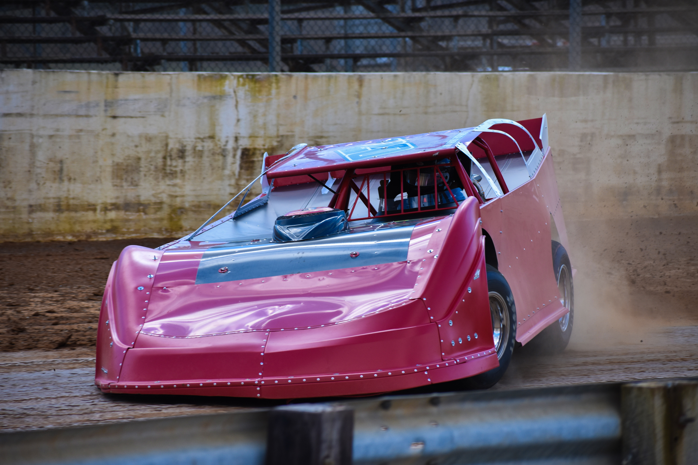
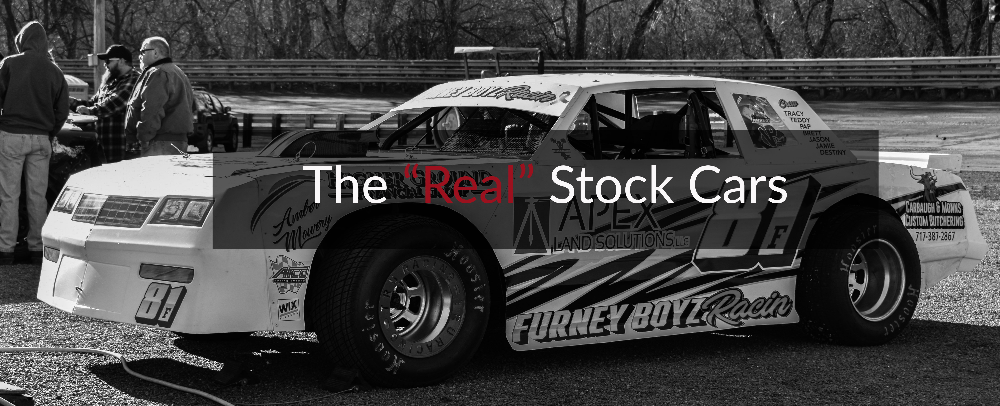

Ninety miles outside of our nation’s capital stands a jewel in the crown of tri-state area dirt track racing: Hagerstown Speedway. Born during the boom of the post-World War II era of reinvigoration for motorsport, a track for junkers and truly stock car runners has grown into a place where 600 horsepower Super Late Models go door to door on the half-mile clay, while pure and hobby stocks bang doors and rub fenders under a cloudless summer night’s sky. This is the story of the jewel in the mountains.
Engineers from the war, who had plied their trade to keep America’s war machine running, where coming home and applying those very same skills to their cars to make them go faster. Of course, when one person builds a car that can go fast, another person wants to build one that goes faster than him, and so on and so forth.
Obviously, an outlet for showing off their marvels of engineering would be needed, and places for people to come and watch this contest of skill and speed take place would need to be constructed. From this need, places like the Hagerstown Speedway were built.
Hagerstown Speedway began operations in 1947, when track founder Stanley Schetrompf built the speedway beside the banks of the Conococheague Creek. The track, built at the infancy of the nation’s need for speed, would grow with the sport over its 72-year history.
During the 40s and 50s, the Speedway hosted races for stock cars and Modifieds to strut their stuff. In the 60s, ownership of the race track shifted from Schetrompf to the Stouffer family, and as the holder of the reigns on the speedway changed, so did the cars.
The Modified Coupes that were sliding around the ½ mile of clay became smaller, turning into Super Modifieds and eventually into the modern-day Sprint Cars we’ve come to know and love.
Stock Cars went through a similar metamorphosis, going from glorified street cars to Semi-Late Models and Modern Stocks before becoming the purely race-bred Super Late Model division.
With evolving cars came evolving speeds, and with higher speeds came bigger crowds, and Hagerstown was one of the first tracks in the tri-state (Maryland, Virginia, Pennsylvania) area to modernize to handle the needs of a growing racing culture.
Larger grandstands and concessions stands were built to accommodate more people and keep them fed, larger bathrooms to efficiently handle the call of nature for such a large crowd, and the adoption of electronic scoring made it easier to keep track of the position of each car on track, and make determining a winner a simpler, less time consuming process compared to scoring by hand.
From the Stouffers came Frank Plessinger in 1981 to take the track into the modern day, and now a variety of classes take to the Hagerstown Clay on any given Saturday Night.
Outside of the three weekly racing classes of Pure Stock, Hobby Stock, and Late Model Sportsman, Super Late Models, 305, 358, and 410 Sprint Cars, and circle track racing’s oldest category, Modified take to the track for a series of regionally and nationally sanction ed events run at the speedway.
"The Modern Cars of Hagerstown"
The current crop of cars that run at the Hagerstown Speedway are the Xenith of 70 years of research and development into what makes a race car go fast. We’ll take a look at a sampling of these speed machines.
James lichliter prepares for a hot lap session at Hagerstown Speedway (credit: Darryl Kinsey Jr)
Late Model Sportsman and Super Late Models are the top-billed classes at the Hagerstown Speedway. Defined as the “Latest Model” of a car on the street, the term in dirt track racing defines a full-fendered race car built more for speed than grocery getting.
Late Models have ramp-like noses to help cut through the air, with flat sides and a large, angled aluminum or Lexan piece called a spoiler. The purpose of the spoiler is to help generate downforce (literally defined as the amount of force pushing down on a vehicle based on its aerodynamic characteristics) to keep the cars planted to the ground.
At one-point, Late Model bodies did resemble their real-world counterparts, but as time went by, the cars have become less and less like the cars you’d see on the show room floor. Now, the only way you’d know a Chevy Late Model from a Ford is the stickers where the grill is supposed to be.
Don't expect to make a WalMart run in one of these (credit: Darryl Kinsey Jr)The chassis and bodies are also significantly different between on the road stock cars and purpose-built dirt late models. Where modern cars are built as a unibody (the metal frame and the body are built as one), Dirt Late Models are constructed out of a tubular chassis with a body panels bolted overtop.

Trevor Feathers slings it sideways during the preseason test in March (credit: Darryl Kinsey Jr)
Not only does this make the car lighter and faster, it also makes repairs easier, as a body panel can be unbolted and a new one put in its place.
Late Model rulesets have become mostly standardized over the years, with rule sets based on those from the big two Super Late Model sanctioning bodies: The World of Outlaws sanctioning body that runs at the speedway. Hagerstown Speedway uses the Lucas Oil Late Model Dirt Series (LOLMDS) rulebook as the basis for its rules in Late Model Sportsman, with more rules for the engine and carburetor for the Sportsmans to keep costs to a minimum.
 Dylan Welsh's Pure Stock sits idle before an early season race (credit: Darryl Kinsey Jr)
The other two points-paying classes at Hagerstown are the hotly contested Pure Stock and Hobby Stock classes. These classes look almost identical to the cars you’d see on the streets with heavy modification to make them race ready.
The other two points-paying classes at Hagerstown are the hotly contested Pure Stock and Hobby Stock classes. These classes look almost identical to the cars you’d see on the streets with heavy modification to make them race ready.
Pure Stocks are the more race-like cars of the stock classes, allowing a bit more under the hood and on the bodies than the Hobby Stock rules allow. Keeping the cars more in line with road cars keeps the costs down significantly compared to a late mode, which allows for a more consistent car count during the season.
Dillion Wilson, a nine-year veteran who currently competes in the Pure Stock division, is one of those drivers you’ll see every week at Hagerstown. When asked what made the class so attractive to him, Wilson cited the class’ more down home nature as one of his reasons:
“It’s more of a grass roots class, taking stock production vehicles with close to stock type suspension and making them perform in ways they were never meant to.”
Wilson picked up a win, four top fives and seven top 10s in 2019 (source:Darryl Kinsey Jr)
Hobby Stocks are the entry level of the stock classes, which has a ruleset much more constrictive than their racier big brothers. Interiors, bodies, tires, engines and more are all highly regulated and scrutinized by officials.

2019 Hobby Stock champ Kevin Thomas slides through turn 3 at Hagerstown (source:Darryl Kinsey Jr)
The constrictive rule-making of Hobby Stock has a point to it. A tight lock of the rulebook in theory keeps the playing field level and the costs, a dubious four-letter word that has become a talking point over the last decade, to a minimum. However, as we'll see in the next section, keeping costs down is harder than it looks.
On any given Saturday Night, the pits at Hagerstown Speedway and other short tracks are full of weekend warriors living out the dream of racing. However, chasing the dream often comes with a hefty price tag.
As you can see by the above chart, it costs a lot of money to go really fast; And even more so to go really, really fast. Super Late Models, who run nine times in non-track points paying races, could cost upwards of $100,000 for a machine (body and chassis).
And that’s before we get to the weekly costs of racing. First, there's fuel. If you decide to buy your fuel in bulk and bring it with you, a 5-gallon drum of the Sunoco racing fuel used at the track could run you the equivilent of $9.75 a gallon. (you read that right). A simpler option would be to fill up at the at-track pump, which will run you $11 a gallon. Thanks to Brett Rose, The Speedway's Public Relations and Media Director for these estimated prices.
Once you pick your jaw up off the floor, we can get to tires. Then, there are tires. The Hoosier M60, one of the tires allowed in the Hobby Stock Category, will run you about $511.56 per set (127.89 per tire). The Latemodel Sportsman spec Hoosier 1300 will run you $687.96 a set. ($171.99 per tire)
The price of racing tires, everyone (source: hoosier.com>)Now that you've had time to pick your jaw up off the floor from THAT sticker price, now process the fact that race tires and fuel don't last very long
Race car tires are not as hard as the tires on your passenger car, which means greater speeds at the costs of longevity. Racing engines are tuned to push out the maximum amount of horsepower allowable by the rules, which requires a lot of fuel to get to the engine, to be burned up at a massive rate, which requires a large fuel tank.
So, let’s do some math. For simplicity’s sake, we’ll use the prices listed in the second paragraph.
Let's say you have a fifteen gallon fuel tank in your car. at the pump price of $11 per gallon, it's going to cost you $165 per fill up if you use it al. If you decide to bring three sets of tires to the race track with you, it’ll take another $1,534.68 if bought new. Then add up that you're going to go through your fuel and tires several times during the season and those costs go up and up and up
So, racing is expensive.That has been made abundantly clear. But the money has to be good right? Well…
During the Turn 5 Turnaround Small Car National held on Apr. 27, Late Model Sportsman teams ran for a winners’ purse of $1500. Pure Stocks ran for $750, and Hobby Stocks? $500.
Which means in Hobby Stock, even if you win, the most you’ll get is a profit on your fuel costs. If you don’t win, then things are looking pretty bleak for you.
Now, some races pay higher than those figures. For example, the Lucas Oil Late Model Dirt Series paid $12,000 to win for Super Late Models at Hagerstown. The Mason Dixon Shootout Series, a regional series for Limited Late Models, paif 1,500 to the winner during its Aug. 24 event a the speedway. But the fact remains that on more nights than not, winning covers very little unless you've got sponsorship from local businesses.
So if you're spending a whole lot to win a whole little, what's the point of racing?
For starters, the racing at the speedway has to be good to justify the expense. Very few will spend the time and effort to load up and travel to a raceway with boring, follow the leader style racing, and even fewer will take time out of their busy day to go and see it
Hagerstown emphatically checks the box for on track action. Cars routinely get two, three, even four wide (if they're brave enough) in the corners.
To make sure the surface is at its peak condition on race day, the track crew massages the surface during the week to make sure that there's plenty of moisture in the track to make it tacky, or grippy. A tackier surface means more lines can be run in so that even when the track slicks off (term used for the drying of the track surface during an event), there's multiple lanes for drivers to chose from to get through the corners.
More lines = more room to race. more room to race = more cars side by side. And more cars side by side = a happy, entertained fanbase ready to come back the next week to get their fix of racing of action.
Second, is the history. Hagerstown has seen some of the best in the region cross its finish line. Names like Tom Peck, Denny Bonebrake, and Gary Stuhler have recorded wins there.
As Brett Rose, puts it, winning a race at Hub City pulls a lot of weight:
"The Competition at Hagerstown has always been tough, and running good there meant something. If you won, you knew you beat some of the best local teams in the business."
"For others like Dillon Wilson, racing is a way of life:
"It’s what I love to do and I can’t imagine not racing”
Mike Kershner, who started racing the relatively cheap 4-cylinder Mini stock class in 1999, agrees
"The only thing i can say is that it's very addictive. Once it gets in your blood its hard to stop."
For others, it’s in their DNA. Kevin Boyer, who made several starts in Pure Stocks last season, races in part for his son D.j and father Jim, who was one of the winningest drivers at the now-defunct Beltsville Speedway.
Jim Boyer was a master of Beltsville in the 60s and 70s (credit: Kevin Boyer)The Boyer's aen't the only family to pass down racing from father to son. In 2007, Mike’s son Cody climbed behind the wheel of a late model. The younger Kershner was a points contender for the entirety of 2019 until a breakage in the Hub City 100 put an end to his title hopes.
At the end of the last season, Mike got to strap into Cody’s Limited and turn a few laps at Hagerstown. When asked about the experience, he had this to say:
“Running Cody’s Limited in practice was a total blast. It gives you a whole new respect for what those guys do in those cars every week.”
While he would love to climb behind the wheel of one again and get the chance to race against his son, the economics at the time don’t line up:
“I would love to run it again sometime but I doubt I would ever get the opportunity to race against Cody. Just too expensive for me to operate a limited late model.”
The allure of Hagerstown Speedway keeps people coming back to test their skills on the famed half-mile speedway. Every year, drivers test the mettle to put their names up with the greats of tri-state area dirt track racing. Despite the challenges of racing, the sweet taste of victory is more than enough to have drivers loading up their cars to throw down at the Jewel in the Mountain.